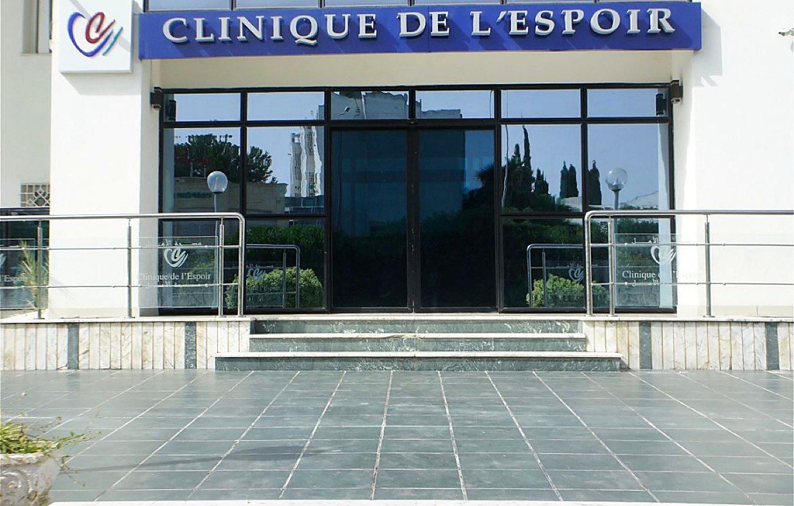
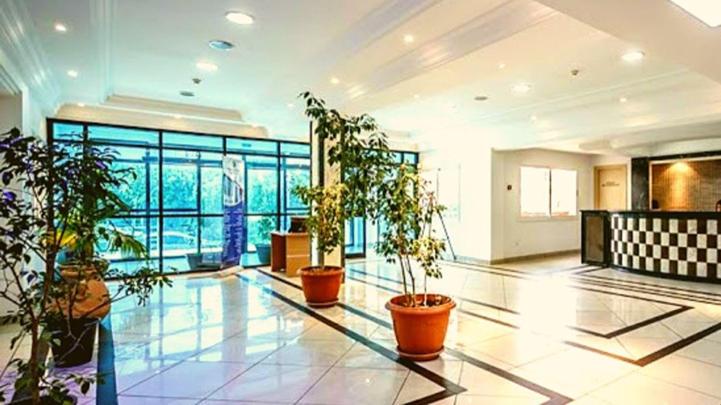
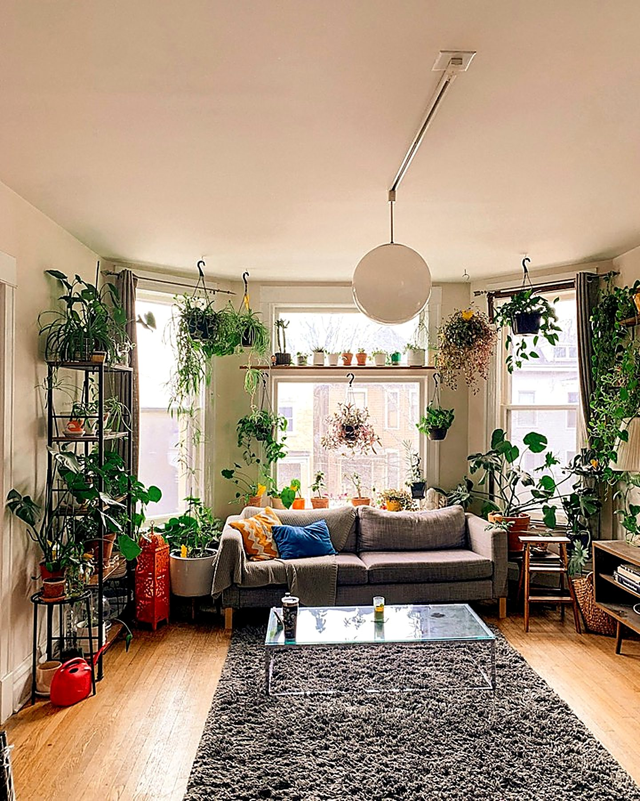
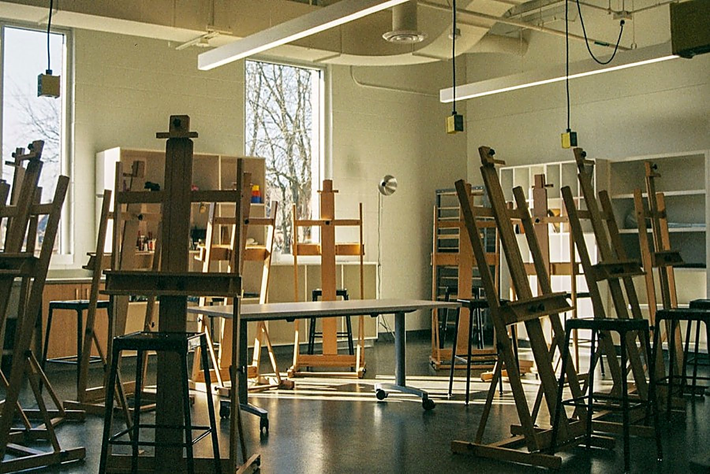

Le manque physique
Tremblements, sueurs, tachycardie, tension qui monte, nausées, insomnie, anxiété massive. Il commence quelques heures après la dernière prise et culmine en général entre le deuxième et le troisième jour.
C'est un phénomène physiologique, mesurable, parfois dangereux — et qui se traite. Sevrage médicalisé et soins psychiatriques, assurés à la Clinique Espoir, El Menzah 9, Tunis.

Une consommation prolongée déplace l'équilibre du système nerveux. Le cerveau compense en permanence l'effet du produit ; quand le produit disparaît, cette compensation reste seule en piste. C'est le syndrome de manque — et selon la substance, il va de l'inconfort majeur au risque vital.
Tremblements, sueurs, tachycardie, tension qui monte, nausées, insomnie, anxiété massive. Il commence quelques heures après la dernière prise et culmine en général entre le deuxième et le troisième jour.
Pour l'alcool et les benzodiazépines, un arrêt brutal peut provoquer des crises convulsives et un delirium tremens — confusion, hallucinations, fièvre, déshydratation. C'est une urgence médicale, pas une mauvaise nuit à passer.
Une fois le corps désintoxiqué, l'envie irrépressible reste. Elle se déclenche par des lieux, des personnes, des horaires, une émotion. C'est elle qui fait rechuter, et c'est elle que le travail thérapeutique vise.

Un sevrage d'alcool ou de benzodiazépines conduit sans encadrement médical expose à des convulsions, à un delirium tremens et à des complications cardiaques ou métaboliques. Un sevrage encadré traite ces risques avant qu'ils n'apparaissent : surveillance des constantes, traitement adapté, hydratation, vitamine B1. Il rend aussi l'épreuve nettement moins pénible — ce qui change tout sur la suite.
Toutes les substances sont prises en charge — alcool, drogues, médicaments détournés, tabac — ainsi que les addictions sans produit. Les durées ci-dessous sont indicatives : elles varient avec l'ancienneté de la consommation, les quantités, l'âge et l'état de santé général. Le protocole est décidé après examen.
C'est le cas le plus fréquent, et celui qu'il ne faut surtout pas gérer seul : les sevrages s'additionnent et se masquent. Décrivez la situation au téléphone, l'ordre des priorités se décide médicalement.
+216 00 000 000Un sevrage réussi ne s'arrête pas quand les tremblements cessent. La désintoxication est la partie courte ; ce qui décide de la suite, c'est ce qu'on construit pendant et après.
Parler à un médecinExamen clinique, bilan biologique, hépatique et cardiaque, évaluation de la sévérité de la dépendance et recherche des troubles associés — anxiété, dépression, sommeil, risque suicidaire. Rien ne commence avant d'avoir mesuré le terrain.
Jour 1
Le syndrome de manque est traité, pas subi : protocole propre à la substance, doses dégressives, surveillance des constantes plusieurs fois par jour, hydratation, vitamines, prévention des convulsions et du delirium.
Jours 1 à 7 environ
Le sommeil se remet en place, l'appétit revient, l'humeur se relève ou révèle ce qu'elle cachait. C'est là que se traite le trouble psychiatrique masqué par le produit, et que la journée retrouve des heures fixes.
Semaines 1 à 3
Entretien motivationnel, thérapie cognitivo-comportementale, groupe de parole entre pairs, repérage des situations à risque, plan écrit pour les moments de bascule, et un travail avec l'entourage quand il est possible.
Tout au long du séjour
Consultations rapprochées, poursuite du traitement, entretien familial, orientation vers un groupe d'entraide et vers le médecin traitant. Le premier mois dehors est le plus fragile : il est suivi de près.
3 à 12 mois
Le premier signe de guérison n'est ni l'humeur ni la motivation : c'est la nuit. Voici, semaine par semaine, ce qui se passe réellement — la même chambre, le même lit, la même personne, à six semaines d'intervalle.
03 h 00 heure du réveil
Trois heures de sommeil, coupées en morceaux. Le réveil de 3 h du matin est le plus dur : c'est l'heure où le manque se réveille avant vous, et où l'on reprend souvent pour pouvoir se rendormir.
Le sevrage médicalisé est passé. Les tremblements ont cessé, la tension et le pouls redescendent. Le sommeil revient par bouts : encore court, encore fragile, mais il revient sans produit.
Le sommeil se regroupe en un seul bloc au lieu de trois. C'est le premier signe fiable que le système nerveux se réinstalle — bien avant que l'humeur ne suive.
Le produit ne masque plus rien. Ce qui reste apparaît en clair : une dépression, une anxiété, un trouble du sommeil ancien. C'est ici que le traitement psychiatrique prend le relais du sevrage.
Se lever ne demande plus de courage. L'appétit revient, le poids se stabilise, la journée a de nouveau des heures fixes — repas, atelier, entretien, coucher.
Les envies existent toujours — elles existeront longtemps. La différence, c'est qu'elles ont maintenant un nom, des déclencheurs identifiés, une réponse écrite à l'avance et quelqu'un à appeler.
Deux semaines de nuits complètes. C'est le repère que nous visons avant la sortie : pas l'absence d'envie, qui ne se commande pas, mais un sommeil qui tient tout seul.
Illustration, et non la photographie d'un patient. Elle représente un profil d'évolution courant après un sevrage encadré ; l'évolution réelle varie d'une personne à l'autre.
On boit rarement sans raison. L'alcool endort une anxiété, la cocaïne relance une dépression, le cannabis éteint des idées qui tournent, les somnifères réparent des nuits que le trouble bipolaire a détruites. Traiter la consommation sans traiter ce qu'elle compense, c'est organiser la rechute.
C'est pourquoi le sevrage est ici un acte psychiatrique : le même médecin conduit la désintoxication et prend en charge le trouble qui apparaît derrière, une fois le produit retiré.
Avec ou sans addiction associée. Ces descriptions servent à reconnaître, pas à diagnostiquer : seul un entretien médical peut poser un diagnostic.
Une tristesse ou une perte d'intérêt qui dure plus de deux semaines, presque toute la journée, presque tous les jours. S'y ajoutent souvent le sommeil qui se casse — réveils à 4 h du matin —, l'appétit qui change, la fatigue au réveil, la lenteur, la culpabilité, et parfois l'idée que tout le monde s'en porterait mieux.
Prise en charge : psychothérapie, antidépresseur quand il est indiqué, remise en route du rythme et de l'activité. L'hospitalisation se justifie quand il y a un risque suicidaire, un refus de s'alimenter, ou quand rien ne bouge en ambulatoire.
Une alternance entre des épisodes dépressifs et des phases d'exaltation : besoin de sommeil effondré sans fatigue, débit de parole accéléré, dépenses, projets démesurés, irritabilité, désinhibition. Entre les épisodes, l'état peut être parfaitement normal, ce qui retarde souvent le diagnostic de plusieurs années.
Prise en charge : thymorégulateurs, protection du sommeil, psychoéducation du patient et de la famille pour reconnaître les signes précoces d'un nouvel épisode. Les consommations d'alcool et de stimulants aggravent nettement l'évolution.
Anxiété généralisée qui tourne en continu, attaques de panique avec sensation de mort imminente, phobies, trouble obsessionnel compulsif, état de stress post-traumatique. L'anxiété fait consommer : c'est le premier motif d'automédication par l'alcool et les somnifères.
Prise en charge : thérapie cognitivo-comportementale et exposition graduée, relaxation, traitement de fond si nécessaire — en évitant précisément les benzodiazépines au long cours.
Hallucinations, convictions délirantes de persécution, discours désorganisé, retrait, méfiance envers les proches. Souvent le patient ne se vit pas comme malade, ce qui rend la démarche impossible sans la famille.
Prise en charge : traitement antipsychotique, mise à l'abri le temps de la phase aiguë, réhabilitation ensuite. La précocité de la prise en charge pèse lourd sur l'évolution à long terme.
Insomnie d'endormissement ou de milieu de nuit, hypersomnie, inversion du rythme, cauchemars répétés. Rarement isolé : le sommeil est le premier symptôme à se dérégler dans presque toutes les pathologies psychiatriques, et le dernier à se réparer après un sevrage.
Prise en charge : traitement de la cause, restructuration des horaires, thérapie de l'insomnie, sevrage progressif des somnifères déjà installés.
Un fonctionnement stable et durable qui met en difficulté : instabilité émotionnelle et peur de l'abandon dans l'état-limite, évitement des relations, dépendance, rigidité. Les conduites addictives et les passages à l'acte y sont fréquents.
Prise en charge : psychothérapie structurée dans la durée, travail sur la régulation des émotions, cadre clair et constant. Le séjour hospitalier sert aux périodes de crise, pas au traitement de fond.
Épuisement qui ne se répare plus au repos, distance cynique vis-à-vis du travail, sentiment d'inefficacité, puis souvent effondrement brutal. Fréquemment accompagné d'une augmentation discrète de la consommation d'alcool ou de somnifères.
Prise en charge : arrêt et mise à distance, traitement d'un éventuel épisode dépressif, travail sur le retour — le retour au travail se prépare, il ne s'improvise pas.
Le traitement médicamenteux tient une place, pas toute la place. Le reste se joue en entretien, en groupe et dans le rythme.
Faire émerger les raisons propres du patient plutôt que lui opposer les nôtres. C'est l'approche qui obtient le plus d'adhésion en addictologie.
Repérer les pensées et les situations qui précèdent la consommation ou la crise, et construire une autre réponse, à l'avance et par écrit.
Entendre quelqu'un décrire exactement ce qu'on croyait être seul à vivre. C'est souvent le moment où la honte baisse assez pour que le travail commence.
L'entourage est épuisé, en colère, ou trop protecteur. On lui explique la maladie, ce qui aide et ce qui aggrave, et ce qu'il a le droit de ne plus porter.
Connaître son trouble, ses signes précoces, l'effet réel de son traitement. Un patient informé rechute moins et revient plus tôt.
Peinture, écriture, musique, pour les moments où les mots ne viennent pas encore — fréquents dans les premiers jours d'un sevrage.
Respiration, relaxation, marche, remise en mouvement. Agit sur l'anxiété, le sommeil et le craving, sans interaction médicamenteuse.
Renutrition et correction des carences après un sevrage alcoolique, encadrement des variations de poids liées aux traitements.
Le rythme fait une partie du travail. Après des mois où plus rien n'avait d'horaire, le corps se remet en place parce que les repas, les ateliers et le coucher reviennent à la même heure chaque jour.
Exemple de journée en hospitalisation complète. Le programme est adapté à chaque patient et revu chaque semaine avec lui.
On attend presque toujours trop longtemps — par honte, ou parce qu'on se dit qu'on gère. Un seul de ces signes suffit pour justifier un appel, et l'appel n'engage à rien.
À la Clinique Espoir, El Menzah 9 à Tunis, en hospitalisation complète, en hôpital de jour ou en consultation externe, selon ce que la situation demande. La clinique est ouverte 24 h/24 et 7 j/7 : chambres individuelles ou doubles, présence infirmière jour et nuit, transport médicalisé sur demande.







Les photographies de l'entrée et de la réception sont celles de la clinique. Les autres images illustrent l'aménagement des espaces.
Pour le tabac ou le cannabis, souvent oui, avec un suivi. Pour l'alcool et les benzodiazépines, l'arrêt sans encadrement médical expose à des convulsions et à un delirium tremens : la décision se prend après examen, jamais à l'avance et jamais seul.
La phase aiguë dure en général une semaine. Un séjour de deux à quatre semaines permet en plus de stabiliser le sommeil, de traiter le trouble sous-jacent et d'engager le travail sur le craving. La durée est réévaluée chaque semaine avec le patient.
C'est la situation la plus fréquente. Appelez d'abord pour vous : on vous aide à préparer la conversation, à choisir le moment, et à savoir quoi faire si l'état se dégrade. L'hospitalisation se fait en principe avec le consentement du patient ; lorsque l'état ne le permet pas, la loi encadre l'admission à la demande d'un proche et la procédure vous est expliquée.
Non. La rechute fait partie de l'histoire de la plupart des dépendances ; ce qui compte, c'est le délai avant de revenir. Revenir après trois jours de reprise n'a rien à voir avec revenir après six mois — et personne ici ne reproche l'un ou l'autre.
Le secret médical couvre le séjour entier. Aucune information n'est transmise à un employeur, à une administration ou à un tiers sans l'accord écrit du patient.
Ils dépendent du type de prise en charge et de la chambre. Ils sont communiqués au téléphone, en détail et sans engagement, avant toute admission.
Les informations de cette page sont générales et ne remplacent pas une consultation médicale. Aucun traitement, aucun arrêt et aucune modification de dose ne doit être décidé à partir de ce site.

Prise en charge médicalisée de l'addiction et du sevrage pour tous les produits : alcool, benzodiazépines, opiacés, cannabis, cocaïne, prégabaline et autres médicaments détournés. Aussi les addictions comportementales (jeu, écrans).
Traitement des troubles psychiatriques et de la santé mentale : schizophrénie, troubles bipolaires, dépression, troubles anxieux, troubles du sommeil, et autres conditions psychiatriques. Consultations générales et suivi après hospitalisation.